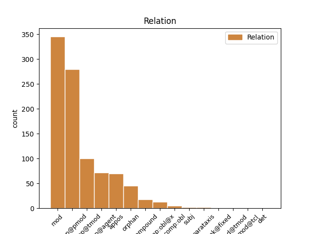
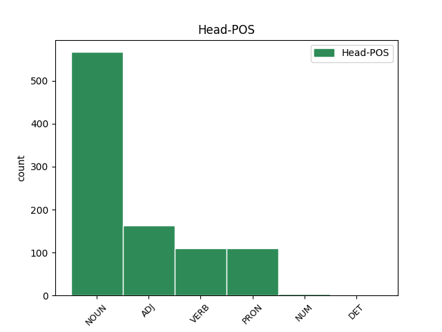
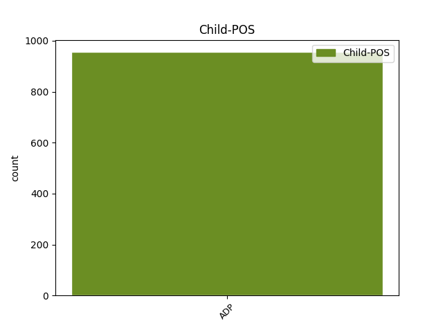

Distribution of features within this leaf



Agreement Rules sorted by frequency.
- When the dependent token is the underspecified dependency(udep@pmod) of the head token, and the head token is PRON and the dependent token is ADP.
1 Ce _ _ _ _ 0 _ _ _
2 încă _ _ _ _ 0 _ _ _
3 ai _ _ _ _ 0 _ _ _
4 cîteva _ _ _ _ 0 _ _ _
5 nume _ _ _ _ 0 _ _ _
6 în _ _ _ _ 0 _ _ _
7 Sardiia _ _ _ _ 0 _ _ _
8 carii _ _ _ _ 0 _ _ _
9 nu _ _ _ _ 0 _ _ _
10 și _ _ _ _ 0 _ _ _
11 -au _ _ _ _ 0 _ _ _
12 spurcat _ _ _ _ 0 _ _ _
13 veșmentele _ _ _ _ 0 _ _ _
14 sale _ _ _ _ 0 _ _ _
15 ; _ _ _ _ 0 _ _ _
16 pentr- _ _ _ _ 0 _ _ _
17 aceaia _ _ _ _ 0 _ _ _
18 vor _ _ _ _ 0 _ _ _
19 îmbla _ _ _ _ 0 _ _ _
20 cu cu ADP Spsa AdpType=Prep|Case=Acc 21 udep@pmod _ ref=IOAN_APOC_3.4
21 Mine eu PRON Pp1-sa--------s Case=Acc|Number=Sing|Person=1|PronType=Prs|Strength=Strong 0 _ _ _
22 în _ _ _ _ 0 _ _ _
23 albe _ _ _ _ 0 _ _ _
24 ( _ _ _ _ 0 _ _ _
25 veșmente _ _ _ _ 0 _ _ _
26 ) _ _ _ _ 0 _ _ _
27 , _ _ _ _ 0 _ _ _
28 că _ _ _ _ 0 _ _ _
29 -s _ _ _ _ 0 _ _ _
30 destoinici _ _ _ _ 0 _ _ _
31 . _ _ _ _ 0 _ _ _
1 Dentr- _ _ _ _ 0 _ _ _
2 această _ _ _ _ 0 _ _ _
3 încă _ _ _ _ 0 _ _ _
4 să _ _ _ _ 0 _ _ _
5 cunoaște _ _ _ _ 0 _ _ _
6 , _ _ _ _ 0 _ _ _
7 că _ _ _ _ 0 _ _ _
8 ce _ _ _ _ 0 _ _ _
9 cuvinte _ _ _ _ 0 _ _ _
10 pune _ _ _ _ 0 _ _ _
11 , _ _ _ _ 0 _ _ _
12 zicîndu _ _ _ _ 0 _ _ _
13 : _ _ _ _ 0 _ _ _
14 " _ _ _ _ 0 _ _ _
15 Mila _ _ _ _ 0 _ _ _
16 Domnului _ _ _ _ 0 _ _ _
17 să _ _ _ _ 0 _ _ _
18 fie _ _ _ _ 0 _ _ _
19 cu _ _ _ _ 0 _ _ _
20 voi tu PRON Pp2-pa--------s Case=Acc|Number=Plur|Person=2|PronType=Prs|Strength=Strong 0 _ _ _
21 cu cu ADP Spsa AdpType=Prep|Case=Acc 20 appos _ ref=PAVEL_EVREI_PRED.9
22 toți _ _ _ _ 0 _ _ _
23 ; _ _ _ _ 0 _ _ _
24 Amin _ _ _ _ 0 _ _ _
25 " _ _ _ _ 0 _ _ _
26 . _ _ _ _ 0 _ _ _
Disagree Examples:
1 Și _ _ _ _ 0 _ _ _
2 veniră _ _ _ _ 0 _ _ _
3 cătră _ _ _ _ 0 _ _ _
4 Iisus _ _ _ _ 0 _ _ _
5 și _ _ _ _ 0 _ _ _
6 văzură _ _ _ _ 0 _ _ _
7 pre _ _ _ _ 0 _ _ _
8 cel _ _ _ _ 0 _ _ _
9 îndrăcit _ _ _ _ 0 _ _ _
10 șăzînd _ _ _ _ 0 _ _ _
11 și _ _ _ _ 0 _ _ _
12 sănătos sănătos ADJ Afpmsrn Case=Acc,Nom|Definite=Ind|Degree=Pos|Gender=Masc|Number=Sing 0 _ _ _
13 la la ADP Spsa AdpType=Prep|Case=Acc 12 udep@pmod _ ref=MARC5.15
14 minte _ _ _ _ 0 _ _ _
15 pre _ _ _ _ 0 _ _ _
16 acela _ _ _ _ 0 _ _ _
17 ce _ _ _ _ 0 _ _ _
18 avea _ _ _ _ 0 _ _ _
19 legheon _ _ _ _ 0 _ _ _
20 și _ _ _ _ 0 _ _ _
21 să _ _ _ _ 0 _ _ _
22 spămîntară _ _ _ _ 0 _ _ _
23 . _ _ _ _ 0 _ _ _
1 Și _ _ _ _ 0 _ _ _
2 veniră _ _ _ _ 0 _ _ _
3 cătră _ _ _ _ 0 _ _ _
4 Iisus _ _ _ _ 0 _ _ _
5 și _ _ _ _ 0 _ _ _
6 văzură _ _ _ _ 0 _ _ _
7 pre _ _ _ _ 0 _ _ _
8 cel _ _ _ _ 0 _ _ _
9 îndrăcit îndrăcit NOUN Ncmsrn Case=Acc,Nom|Definite=Ind|Gender=Masc|Number=Sing 0 _ _ _
10 șăzînd _ _ _ _ 0 _ _ _
11 și _ _ _ _ 0 _ _ _
12 sănătos _ _ _ _ 0 _ _ _
13 la _ _ _ _ 0 _ _ _
14 minte _ _ _ _ 0 _ _ _
15 pre pe ADP Spsa AdpType=Prep|Case=Acc 9 appos _ ref=MARC5.15
16 acela _ _ _ _ 0 _ _ _
17 ce _ _ _ _ 0 _ _ _
18 avea _ _ _ _ 0 _ _ _
19 legheon _ _ _ _ 0 _ _ _
20 și _ _ _ _ 0 _ _ _
21 să _ _ _ _ 0 _ _ _
22 spămîntară _ _ _ _ 0 _ _ _
23 . _ _ _ _ 0 _ _ _
1 Și _ _ _ _ 0 _ _ _
2 începură _ _ _ _ 0 _ _ _
3 a _ _ _ _ 0 _ _ _
4 ruga _ _ _ _ 0 _ _ _
5 pre _ _ _ _ 0 _ _ _
6 El _ _ _ _ 0 _ _ _
7 să _ _ _ _ 0 _ _ _
8 Să _ _ _ _ 0 _ _ _
9 ducă _ _ _ _ 0 _ _ _
10 den din ADP Spca AdpType=Prep|Case=Acc|Compound=Yes 11 udep@pmod _ ref=MARC5.17
11 hotarăle hotar NOUN Ncfpry Case=Acc,Nom|Definite=Def|Gender=Fem|Number=Plur 0 _ _ _
12 lor _ _ _ _ 0 _ _ _
13 . _ _ _ _ 0 _ _ _
1 Iară _ _ _ _ 0 _ _ _
2 El _ _ _ _ 0 _ _ _
3 zise _ _ _ _ 0 _ _ _
4 ei _ _ _ _ 0 _ _ _
5 : _ _ _ _ 0 _ _ _
6 Fiică _ _ _ _ 0 _ _ _
7 , _ _ _ _ 0 _ _ _
8 credința _ _ _ _ 0 _ _ _
9 ta _ _ _ _ 0 _ _ _
10 te _ _ _ _ 0 _ _ _
11 mîntui _ _ _ _ 0 _ _ _
12 ; _ _ _ _ 0 _ _ _
13 pasă _ _ _ _ 0 _ _ _
14 în _ _ _ _ 0 _ _ _
15 pace _ _ _ _ 0 _ _ _
16 și _ _ _ _ 0 _ _ _
17 fii _ _ _ _ 0 _ _ _
18 sănătoasă sănătos ADJ Afpfsrn Case=Acc,Nom|Definite=Ind|Degree=Pos|Gender=Fem|Number=Sing 0 _ _ _
19 de de ADP Spsa AdpType=Prep|Case=Acc 18 udep@pmod _ ref=MARC5.34
20 boala _ _ _ _ 0 _ _ _
21 ta _ _ _ _ 0 _ _ _
22 . _ _ _ _ 0 _ _ _
1 Și _ _ _ _ 0 _ _ _
2 varecine _ _ _ _ 0 _ _ _
3 nu _ _ _ _ 0 _ _ _
4 vor _ _ _ _ 0 _ _ _
5 priimi _ _ _ _ 0 _ _ _
6 pre _ _ _ _ 0 _ _ _
7 voi _ _ _ _ 0 _ _ _
8 , _ _ _ _ 0 _ _ _
9 nece _ _ _ _ 0 _ _ _
10 vor _ _ _ _ 0 _ _ _
11 asculta _ _ _ _ 0 _ _ _
12 pre _ _ _ _ 0 _ _ _
13 voi _ _ _ _ 0 _ _ _
14 , _ _ _ _ 0 _ _ _
15 eșind _ _ _ _ 0 _ _ _
16 de _ _ _ _ 0 _ _ _
17 acolea _ _ _ _ 0 _ _ _
18 , _ _ _ _ 0 _ _ _
19 scuturați _ _ _ _ 0 _ _ _
20 prahul _ _ _ _ 0 _ _ _
21 de _ _ _ _ 0 _ _ _
22 supt _ _ _ _ 0 _ _ _
23 picioarele _ _ _ _ 0 _ _ _
24 voastre _ _ _ _ 0 _ _ _
25 , _ _ _ _ 0 _ _ _
26 să _ _ _ _ 0 _ _ _
27 fie _ _ _ _ 0 _ _ _
28 aceasta _ _ _ _ 0 _ _ _
29 mărturie mărturie NOUN Ncfsrn Case=Acc,Nom|Definite=Ind|Gender=Fem|Number=Sing 0 _ _ _
30 spre spre ADP Spca AdpType=Prep|Case=Acc|Compound=Yes 29 udep@pmod _ ref=MARC6.11
31 ei _ _ _ _ 0 _ _ _
32 . _ _ _ _ 0 _ _ _